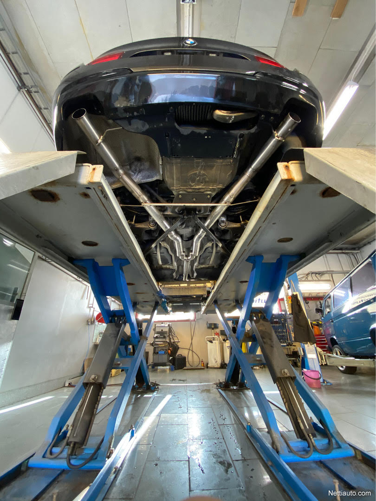
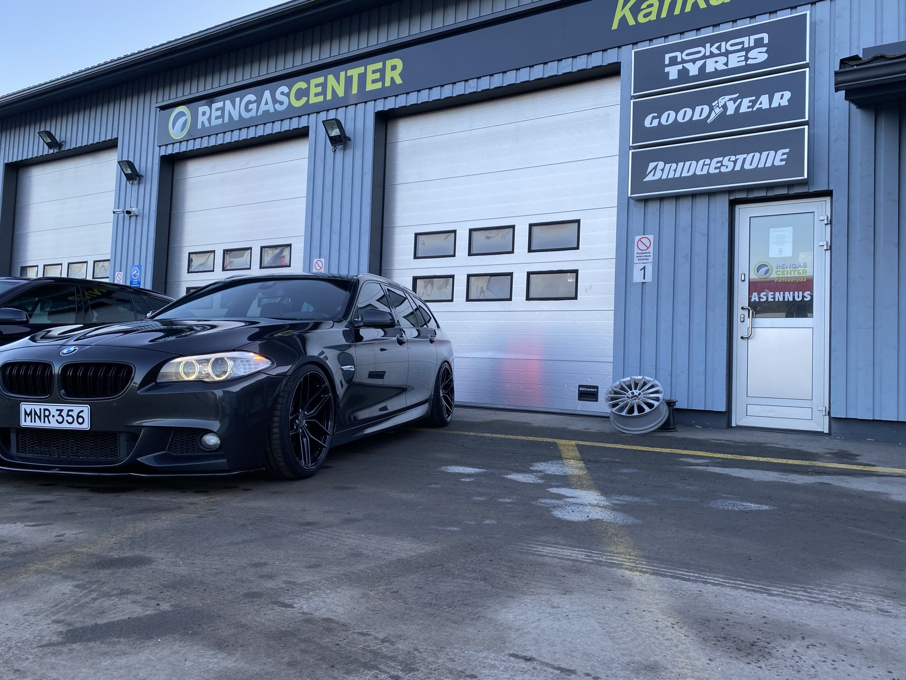
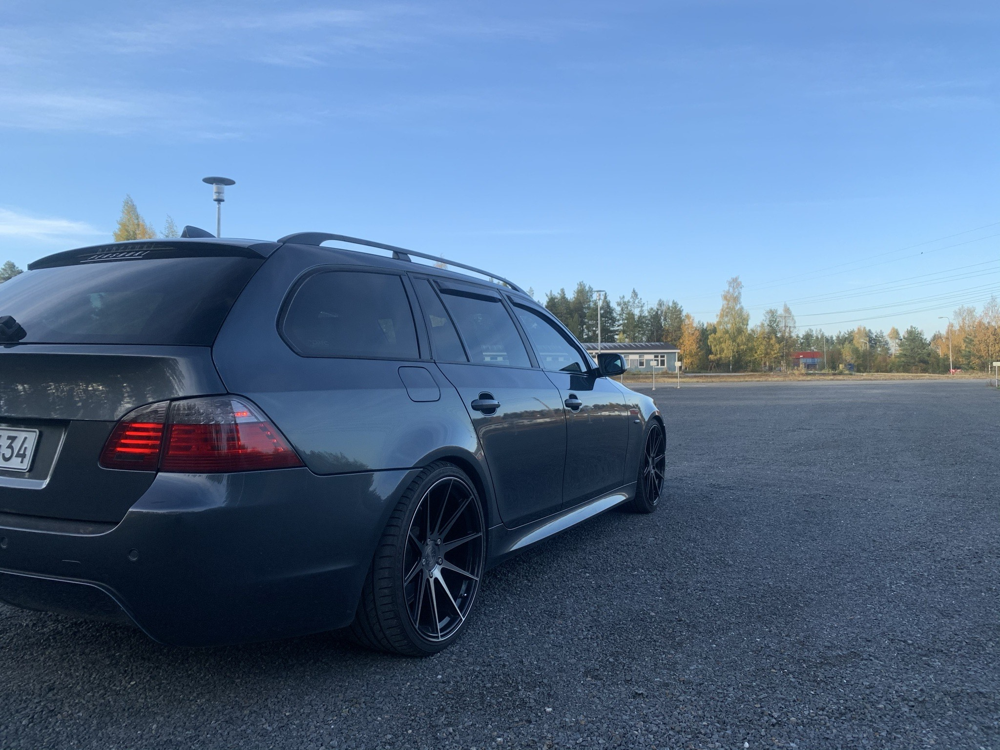

Harrastan vapaa-aikanani pääasiassa autojen parissa. 
Tässä tekemästäni rosteriputkistosta kuva, putkiston tein omistamaani 2013-vuosimalliseen F11.
Kuva omistamastani F11 korimallisesta BMW:stä. Ajoneuvon olen omistanut nyt 1,5 vuotta ja rahaa mennyt senkin edestä. 
Tässä kuvaa sivusta edellisestä ja ensimmäisestä autostani. Auton hain itse 17-vuotiaana Ruotsista. Auto oli uniikki, sillä kyseiseen korimalliin ei moneen oltu ruksailtu imuovia ym.